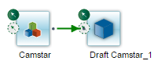

Defining Change Management Workflows
A Change Management Workflow is a sequence of steps that are used to guide a package through the change management process. Change management workflows can include multiple elements:
| • | Change Management Steps |
| • | Change Management Paths |
| • | Change Management Sub-workflows |
Change management workflows contain elements similar to those of container workflows. Refer to "Understanding Workflows" for information on workflow elements. Refer to the Opcenter Execution Medical Device and Diagnostics Change Management User Guide or the Opcenter Execution Core Change Management User Guide for information on the change management workflows specifically.
The Change Mgt Workflow Diagram section on the Change Mgt Workflow page provides a place for you to view, design, and modify change management workflows. Steps are added by dragging a revision of a change management spec or change management workflow to the Change Mgt Workflow Diagram. Paths are added by selecting a path icon on a step and dragging to the next step in your workflow. Refer to "Using Path Selectors" for information on paths.
Siemens provides three change management workflows by default to allow you to begin deploying change management packages immediately.
| • | No Approval - Allows you to deploy change management packages from the source system without requiring approvals on the package. |
| • | Camstar - Requires approvals on change management packages before deploying from the source system. Selecting this option enables the Approvers tab on the Update Package page, allowing you to view the approval template and the assigned approvers. |
| • | PLM - Requires a Product Life Cycle Management (PLM) or external approval decision on change management packages before deploying from the source system. |
Siemens provides an additional default workflow if you are integrating with Teamcenter.
Each default workflow contains Siemens-provided change management specs. You can use or customize the provided change management specs and workflows or create your own to support your organization's business process model. Refer to "Defining Change Mgt Specs" for information on defining change management specs.
Updates to Default Workflows in Version 6, Software Update 12
Siemens replaced the Closed and Voided steps in the default change management workflows with Close and Void transactions in Version 6, Software Update 12. The Closed and Voided steps have been removed from the default workflows in Version 6, SU12.
Installing SU12 or a later software update will not affect your existing default workflows. You can continue to use the Closed and Voided steps and the alter package step functionality to close and void packages. Or, you can remove the Closed and Voided steps from the default workflows and use the Close and Void package transactions. Refer to the Opcenter Execution Medical Device and Diagnostics Change Management User Guide or the Opcenter Execution Core Change Management User Guide for information on the Close and Void transactions.
The application uses the name of the change management spec as the default name for the workflow step and for the path to the newly added step. For example, if you added the Deploy change management spec as a step, the step name is Deploy and the path to the step is Deploy. Renaming the step and path helps to distinguish the step from the spec and to clarify the path. You could rename the Deploy Spec step to Deploying and the path to To Deploying.
The same principle applies when you add a previously defined change management workflow to your workflow. The added workflow becomes a sub-workflow and is named for the workflow you added.
You must expand the change management spec or change management workflow and select a specific revision to add to the Change Mgt Workflow diagram.
Change Mgt Workflow contains the required modeling definition Change Mgt Spec.
WIP messages are not relevant to change management modeling objects.
Step names must be unique within a change management workflow. The application assigns the name of the referenced spec or sub-workflow to the step added to the change management workflow by default. The application will label the first step added to a workflow defaults as First Step by default. The application assigns a numerical extension to a step if you add a second step referencing that same spec or workflow. For example, adding a spec called Deploying to the workflow results in a step named Deploying by default. Adding the Deploying spec to the workflow a second time results in a step named Deploying_1.
You can change a step name at any time. Select the step and then click the Modify Element button to view the Change Mgt Step Details pop-up. Refer to "How to Modify Step Information" for information on viewing and modifying step information.
The icons used to depict spec steps and workflow steps are different. Additionally, the icon for the first step is different from the icons for successive steps regardless of whether your first step is a spec or sub-workflow.
This image shows an example where the first step is a spec.

This image shows an example where the first step is a sub-workflow.

You can reposition steps in a change management workflow by clicking on them and dragging. Any paths to and from the step reposition with the step.
Path names must be unique within a change management workflow. The application uses the name of the To Step as the default name of the path. For example, adding a path from the Draft step to the Deployment Incomplete step results in a path named Deployment Incomplete. The application uses the name of the To Step regardless of path type: default, alternate, or looped.
There are two ways to delete a change management workflow:
| • | Delete a change management workflow and all of its revisions |
| • | Delete a revision but retain the change management workflow instance. |
You cannot delete the revision of record when more than one revision of a change management workflow exists. You must first assign the revision of record designation to a different revision.
You may delete a step that is flagged as the first step in a workflow, however, you will not be able to save until you reassign another step as the first step.
You cannot delete multiple steps if one of the steps contains a path selector. You must first delete a path, click Save, and then delete the other path. You cannot delete steps that contain paths until you first delete the paths.
Attempting to view the history for any deleted spec or workflow that is in use or has been used may cause an error. A package will lose its current status if the step it is on is deleted from a workflow.
Deleting paths does not affect the linked steps. However, deleting a default path will display the default path icon on the From Step enabling to you to add a new default path.
This table defines the fields unique to the Change Mgt Workflow page.
Refer to "Common Fields on Modeling Pages" for information on the fields common to all modeling objects.
|
Field |
Definition |
Type |
|
Change Mgt Workflow Diagram |
||
|
Change Mgt Workflow Diagram |
Displays a workable diagram of the change management workflow steps and paths allowing you to build or modify a workflow. Refer to "Designing Workflows" for information on designing a workflow. |
Optional |
This table describes the controls and buttons on the Change Mgt Workflow Diagram.
|
Control/Button |
Click this button to . . . |
|---|---|
|
|
Set the magnification of the workflow. |
|
|
Fit the workflow into the change management workflow diagram workspace. |
|
|
Displays the current workflow diagram in a resizable pop-up. |
|
|
Delete the selected step, path, or sub-workflow. |
|
|
Display the details pop-up for the selected step or path. The application displays this button only when you select a step or path. |
|
|
Displays the selected sub-workflow in a separate Workflow tab. |


This table defines the fields unique to the Change Mgt Step Details pop-up.
|
Field |
Definition |
Type |
|
Change Mgt Step |
Unique name for this change management step. The application uses the name of the change management spec as the default name for the step, but you can change the name in this pop-up. Note: This field appears when you view the Change Mgt Step Details pop-up for a spec step. |
Required |
|
Change Mgt Sub-workflow Step |
Unique name for this change management sub-workflow step. The application uses the name of the sub-workflow as the default name for the sub-workflow step. Note: This field appears when you view the Change Mgt Step Details pop-up for a sub-workflow step. |
Required |
|
Is First Step |
When selected, indicates this is the first step. By default, it is set to true (selected) and is read-only for the default first step. It is selected and editable for other steps. You must use this field to designate another step as the first step before you can delete the original first step. |
Optional |
|
Is Last Step |
When selected, indicates this is the last step. By default it is set to false (not selected). You must use this field to proceed to the final step. |
Optional |
|
Change Mgt Spec |
Change management specification associated with this step. Note: This field appears when you view the Change Mgt Step Details pop-up for a spec step. |
Required |
|
Change Mgt Workflow Spec |
Change management workflow specification associated with this sub-workflow step. Note: This field appears when you view the Change Mgt Step Details pop-up for a sub-workflow step. |
Required |
|
Sequence |
Relative sequence of this step within the workflow. This value is used to retrieve (via SQL) steps in order. Steps along the alternate route have sequence 0. |
Display Only |
|
Path Selectors grid |
Statements evaluated to determine whether the package moves along the default or alternate paths. Refer to "Using Path Selectors" for information. |
Optional |
|
Expression |
Statement the application evaluates to determine the path for the package. |
Optional |
|
Path to Use |
Path the package will follow if the expression is true. |
Optional |
|
Status |
Active or Inactive. The application evaluates the selector statement when the status is active and skips the selector statement when the status is inactive. |
Optional |
|
Effective From Date |
Beginning date and time of the range within which the application evaluates the statement. The application will skip the statement if the current date is outside the effective date range. |
Optional |
|
Effective To Date |
Last date and time of the range within which the application evaluates the statement. The application will skip the statement if the current date is outside the effective date range. |
Optional |
This table defines the fields unique to the Change Mgt Path Details pop-up.
|
Field |
Definition |
Type |
|
Change Mgt Path |
Unique name for this change management path. By default, it is the name of the step to which this path is going, but you can change the name in this pop-up. |
Required |
|
From Change Mgt Step |
Step where the path started. |
Display Only |
|
To Change Mgt Step |
Step to which this path is going. |
Display Only |
|
On Default Route |
When selected, indicates this path is on the default route. |
Display Only |
|
Is Default Path |
When selected, indicates this path is the default for the step. This field is enabled if you select an alternate change. It becomes the default and the original default becomes an alternate path if you click this field on an alternate path. |
Display Only |
How to Define a Change Management Workflow
Follow these steps to define a Change Management Workflow:
| 1. | Open the Change Mgt Workflow page. The Change Mgt Workflow page appears within the Modeling page. |
| 2. | Click New. Blank fields appear for you to define a new instance. |
| 3. | Enter a name for the change management workflow in the Change Mgt Workflow field. |
| 4. | Enter the revision identifier for this definition in the Revision field. |
| 5. | Enter optional information according to your business requirements. Refer to the field definitions table for information on the optional fields. |
| 6. | Click Save. The application saves the modeling object and displays a success message. |
| 7. | Complete the following procedures to add steps and paths to the Change Mgt Workflow Diagram if necessary: |
| • | "How to Add Steps to a Change Management Workflow" |
| • | "How to Add Paths Between Workflow Steps" |
How to Add Steps to a Change Management Workflow
Follow these steps to add steps to a Change Management Workflow:
| 1. | Perform the "How to Define a Change Management Workflow" procedure. |
Or
Select an existing change management workflow instance.
| 2. | Expand the Change Mgt Spec or Change Mgt Workflow you want to add as a step to view all revisions. |
| 3. | Select the revision to add as a step and drag it to the Change Mgt Workflow Diagram. A step referencing the spec or workflow you selected appears in the Change Mgt Workflow Diagram. The step appears where you dropped it. |
| 4. | Repeat steps 2-3 to add additional steps. |
| 5. | Click Save. The application displays a success message indicating the modeling object was updated. |
How to Add Paths Between Workflow Steps
Follow these steps to add paths between workflow steps:
| 1. | Perform the "How to Define a Change Management Workflow" procedure. |
Or
Select an existing change management workflow instance.
| 2. | Do you want to add a default path or alternate path between two steps? |
|
If you want to add . . . |
Then . . . |
|||||||||
|---|---|---|---|---|---|---|---|---|---|---|
|
A default path |
|
|||||||||
|
An alternate path |
|
| 3. | Repeat step 2 for each additional path you want to add. |
| 4. | Complete the "How to Define Path Selectors" procedure for each path as necessary. |
| 5. | Click Save. The application displays a success message indicating the modeling object was updated. |
How to Add a Looped Path to a Step
Follow these steps to add a looped path to a step:
| 1. | Perform the "How to Define a Change Management Workflow" procedure. |
Or
Select an existing change management workflow instance.
| 2. | Click the appropriate path icon (default or alternate) and drag it to the center of the current step. A path appears, looping back to the same step. |
| 3. | Click Save. The application displays a success message indicating the modeling object was updated. |
How to Insert Steps into an Existing Change Management Workflow
Follow these steps to insert a step into an existing Change Management Workflow:
| 1. | Perform the "How to Define a Change Management Workflow" procedure. |
Or
Select an existing change management workflow instance.
| 2. | Select the path between the two steps where you want to insert a step. The application highlights the path. |
| 3. | Click Remove Item. The application removes the path. |
| 4. | Expand the Change Mgt Spec or Change Mgt Workflow you want to insert as a step to view all revisions. |
| 5. | Select the revision to insert and drag it to the Change Mgt Workflow Diagram. The step appears where you dropped it. |
| 6. | Select the appropriate path icon on the From Step and drag it to the newly inserted step. The application adds the path. |
| 7. | Select the appropriate path icon on the newly inserted step and drag it to the next appropriate step. |
| 8. | Repeat step 7 for any additional paths you want to draw from the newly inserted step. |
| 9. | Draw appropriate paths from existing steps to the newly inserted step if necessary. |
| 10. | Click Save. The application displays a success message indicating the modeling object was updated. |
How to Modify Step Information
Follow these steps to modify step information:
| 1. | Perform the "How to Define a Change Management Workflow" procedure. |
Or
Select an existing change management workflow instance.
| 2. | Select the step to modify. The application displays the Modify Element button on the Change Mgt Workflow Diagram toolbar. |
| 3. | Click Modify Element. The Change Mgt Step Details pop-up appears. |
| 4. | Modify the required fields if necessary: |
| • | Change Mgt Step |
| • | Change Mgt Spec |
| 5. | Enter optional information according to your business requirements. Refer to the field definitions table for information on the optional fields. |
| 6. | Click OK. The Change Mgt Step Details pop-up closes. |
| 7. | Click Save. The application displays a success message indicating the modeling object was updated. |
How to Modify Path Information
Follow these steps to modify path information:
| 1. | Perform the "How to Define a Change Management Workflow" procedure. |
Or
Select an existing change management workflow instance.
| 2. | Select the path to modify. The application displays the Modify Element button on the Change Mgt Workflow Diagram toolbar. |
| 3. | Click Modify Element. The Change Mgt Path Details pop-up appears. |
| 4. | Modify the Change Mgt Path if necessary. |
| 5. | Enter optional information according to your business requirements. Refer to the field definitions table for information on the optional fields. |
| 6. | Click OK. The Change Mgt Path Details pop-up closes. |
| 7. | Click Save. The application displays a success message indicating the modeling object was updated. |
Follow these steps to delete a step or path:
| 1. | Perform the "How to Define a Change Management Workflow" procedure. |
Or
Select an existing change management workflow instance.
| 2. | Select the element you want to delete. |
| 3. | Click Remove Item. The application removes the step and all paths drawn to and from that step when you delete the selected step. The application removes only the path when you delete the selected path. |
| 4. | Add new paths if necessary. |
| Note: | Refer to "How to Add Paths Between Workflow Steps" for information. |
| 5. | Click Save. The application displays a success message indicating the modeling object was updated. |
Follow these steps to define path selectors:
| 1. | Perform the "How to Define a Change Management Workflow" procedure. |
Or
Select an existing change management workflow instance.
| 2. | Select the step for which you want to define path selector statements. The application displays the Modify Element button on the Change Mgt Workflow Diagram toolbar. |
| 3. | Click Modify Element. The Change Mgt Step Details pop-up appears. |
| 4. | Click Add new row on the Path Selectors grid. A new row appears. |
| 5. | Enter the evaluation statement in the Expression field. |
| 6. | Select the Path to Use when the statement is evaluated as true. |
| 7. | Enter optional information according to your business requirements. Refer to the field definitions table for information on the optional fields. |
| 8. | Repeat steps 4-7 to add additional path selector statements. |
| 9. | Click OK. The Change Mgt Step Details pop-up closes. |
| 10. | Click Save. The application saves the modeling object and displays a success message. |
How to Modify a Path Selector Statement
Follow these steps to modify a path selector statement:
| 1. | Perform the "How to Define a Change Management Workflow" procedure. |
Or
Select an existing change management workflow instance.
| 2. | Select the step for which you want to modify a path selector statement. The application displays the Modify Element button on the Change Mgt Workflow Diagram toolbar. |
| 3. | Click Modify Element. The Change Mgt Step Details pop-up appears. |
| 4. | Select the path selector statement to modify in the Path Selectors grid. |
| 5. | Modify the statement as needed. Refer to the "Change Mgt Step Details Pop-Up Field Definitions" table for information on the fields. |
| 6. | Click OK. The Change Mgt Step Details pop-up closes. |
| 7. | Click Save. The application saves the modeling object and displays a success message. |
How to Delete a Path Selector Statement
Follow these steps to delete a path selector statement:
| 1. | Perform the "How to Define a Change Management Workflow" procedure. |
Or
Select an existing change management workflow instance.
| 2. | Select the step for which you want to delete path selector statements. The application displays the Modify Element button on the Change Mgt Workflow Diagram toolbar. |
| 3. | Click Modify Element. The Change Mgt Step Details pop-up appears. |
| 4. | Select the path selector statement to delete in the Path Selectors grid. |
| 5. | Click Delete selected row in the grid. The application deletes the selected row from the grid. |
| 6. | Click OK. The Change Mgt Step Details pop-up closes. |
| 7. | Click Save. The application saves the modeling object and displays a success message. |